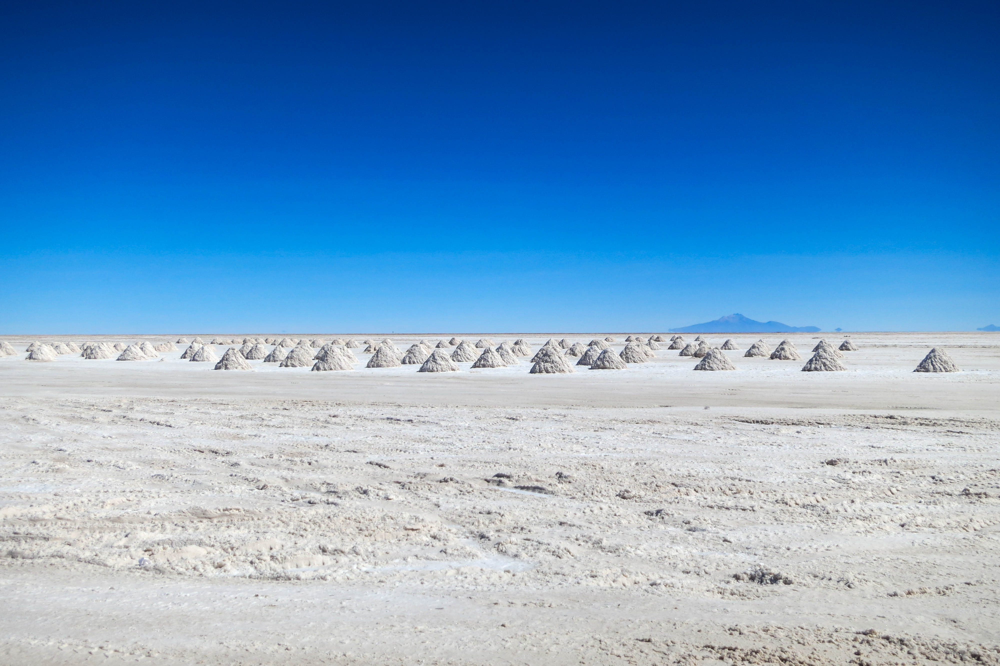
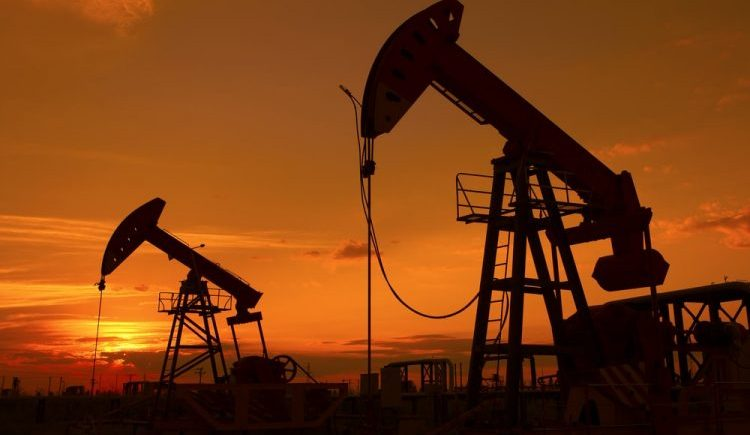
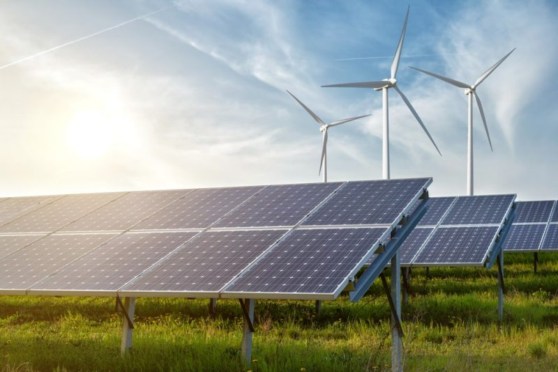
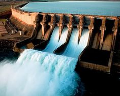
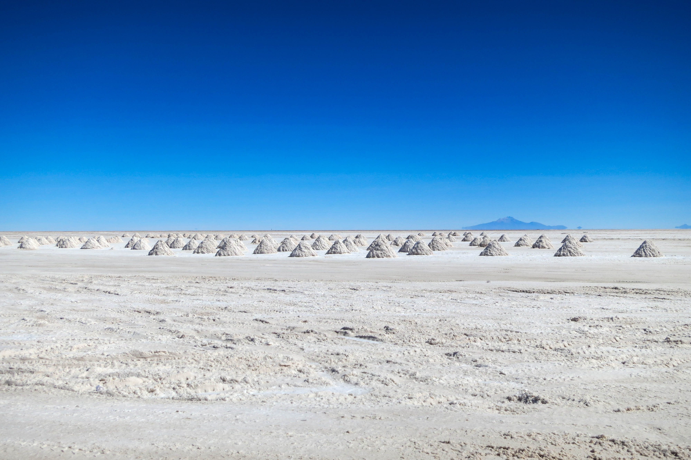
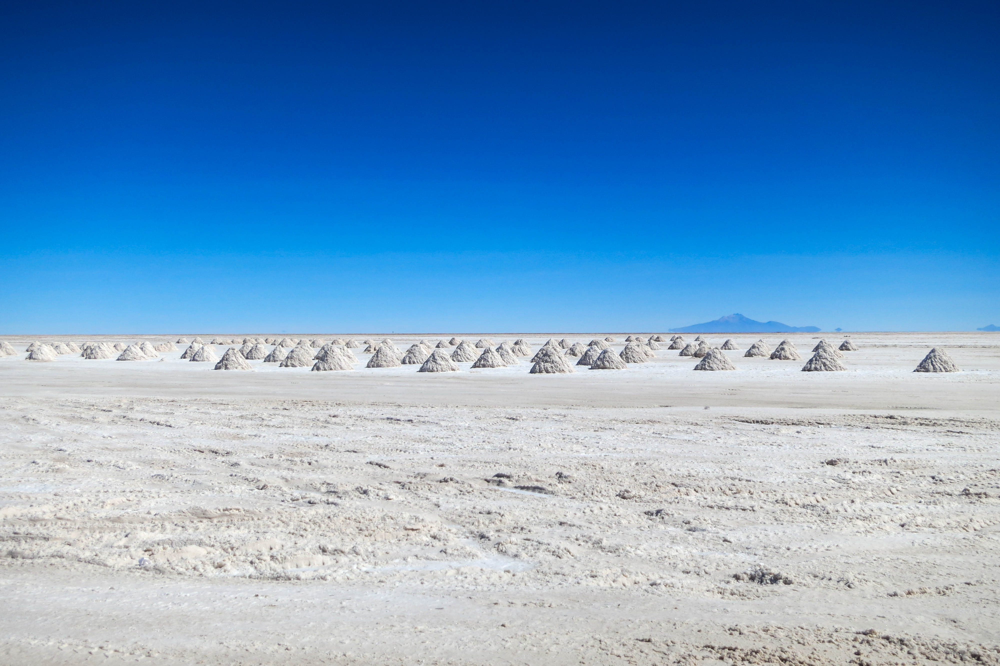

Desde el origen de los tiempos, el ser humano ha tenido acceso a todos los recursos naturales para
poder cubrir su necesidades básicas y secundarias, por ejemplo: vestimenta, alimentos, construcciones de vivientas ó de transportes marítimos , etc .
En primera instancia, era cuando lo necesitaba. Cuando deja de ser "Nómada" empieza a almacenar alimentos de todo tipo y hasta ahí todo bien.
¿ Qué pasa? Muchos años después, entre los siglos XVII Y XVIII, como las poblaciones crecen, hay cada vez más explotación de recursos ,nos afecta drásicamente tanto social, economíca y tambien ambientalmente.
la conocemos como "Revolución Industrial".
El trabajo humano hasta ese entonces ,se basaba en la manufactura y ésto pero a menos velocidad y mayores costos.
Con las nuevas invenciones, como la maquina a vapor, la locomotora con esta misma tecnología, se incrementó la producción, se mejoraron los tiempos , redujo costos
Mas y más recursos son destinados al servicio del hombre.
Se tenía la creencia de que los recursos eran inagotables, hasta que llegó la escasez...
Esta situación, sigue repitiéndose en la actualidad, y no se miden las consecuencias , es por ello que necesitamos que se cumplan políticas, que se plantearon en esa época
Economia Ambiental
La economía ambiental, conserva, en cierta forma, los mismos conceptos que el pensamiento neoclásico
al afirmar que los recursos naturales deben ser aprovechados por la sociedad, sin embargo considera que
se deben realizar todos los esfuerzos para evitar riesgos ecológicos innecesarios.
De esta forma se crea un capitalismo “verde”, donde "lo verde vende" y las empresas que aplican políticas y procedimientos ambientales, que se consideran correctos, se hacen más competitivas frente a aquellas que no lo hacen. Este tipo de economía
hace una valoración económica de los problemas ambientales que se van generando (Eticambientalgt, 2015).
Economía Ecológica
Por su parte, la economía ecológica considera que los recursos naturales pueden ser escasos y plantea la necesidad de renovar los recursos
naturales empleados, el posible reciclaje de los residuos generados y también evalúa
la nocividad de estos hacia el ambiente. Este tipo de pensamiento ecológico busca soluciones adecuadas en cuanto
a costes y precios de la cantidad de recursos utilizados, de los productos obtenidos y de los residuos
emitidos y de esta forma obtener una correcta planificación entre los recursos naturales y las estadísticas
económicas, creando así un sistema de gestión que propone que el crecimiento económico debe ser sostenible (Eticambientalgt, 2015)
El crecimiento sostenible debe empatizar el crecimiento económico, con la equidad social, con la
sostenibilidad ambiental y con el uso de los recursos naturales; sin embargo, hay que considerar que vivimos
en un mundo caracterizado por ambiciones económicas, desigualdades, falta de conocimiento, de educación y de
ética en todos los niveles (Osorio, 2002).
Vivimos en un mundo lleno de incertidumbre y con el reto de construir políticas económicas y ambientales
que no se contrapongan, por lo que debe haber una integración en todos los campos del conocimiento. Ante estos
hechos, urge que se inventen tecnologías suficientemente limpias que dejen intacto el suelo, que reduzca el uso
del espacio, que no agote los recursos naturales, que tengan el menor impacto en el ambiente y que a su vez no
frene la economía, por lo que debe de haber una nueva forma de pensar en todos los niveles, para asegurar una
vida digna en el futuro.
¿Qué son los recursos naturales?
Son los materiales y servicios que proporciona la misma naturaleza sin alteración alguna de parte del hombre.
Estos recursos son muy valiosos para la sociedad ya que esto contribuye a una mejor calidad de vida y a su desarrollo.
Materiales: son aquellas materias primas, los minerales y los alimentos.

Forma indirecta- servicios: son los servicios ecológicos que son indispensables para la continuidad de la vida en el planeta.
Por ejemplo: la capacitación de filtración de agua y la mitigación de los efectos del cambio climático.
Se pueden clasificar los recursos naturales en 3 categorias:
Los recursos renovables: son aquellos que como su nombre lo indica se renuevan a sí mismos haciéndolos aprovechables
casi sin riesgo de que se acaben en un largo plazo, pueden contribuir en la forma de energía o de materia.
El ser humano tiene la capacidad de aprovecharlos para producir servicios que hagan de su vida más fácil y cómoda.
Por ejemplo: Las plantas, el suelo, la atmósfera, los animales, el papel y los hongos son algunos de los ejemplos
de los recursos renovables
Los recursos no renovables: son aquellos como su nombre lo especifica no son capaces de renovarse naturalmente a sí mismos.
Estos recursos naturales tienen como característica fundamental que tienden a agotarse, pueden llegar a desaparecer y por
ello es que deben ser administrados con un criterio de escasez, incluso si son momentáneamente abundantes, como pueden ser
los minerales, los hidrocarburos, el carbón mineral hasta el petróleo ya que cuando un yacimiento se acaba no puede regenerarse.

Los recursos inagotables: son aquellos recursos que prácticamente son imposibles que se agoten y entre ellos se encuentan
la energia geotermica, la energia solar, el viento, y las mareas.


Lo más relevante e importante en cuanto a los recursos naturales es que son limitados y son interdependientes ..
¿Qué significa esto? que los mismos tienen relación entre si, y es necesario tener un equilibrio en cuanto a su explotación
y su administración para no llegar al punto de perder esa renovación con los mismos.
Los individuos y las empresas que son encargados de la producción y distribución, deben lograr utilizar los mismos de forma consciente.
¿Cuáles son los objetivos de política ambiental en Nuestro País?
Asegurar la calidad de los recursos ambientales.
Mejorar la calidad de vida de las generaciones presentes y futuras.
Fomentar la participación social en materia ambiental.
Promover el uso racional y sustentable de los recursos naturales.
Mantener el equilibrio de los sistemas ecológicos.
Asegurar la conservación de la diversidad biológica.
Prevenir los efectos peligrosos que el hombre genera sobre el ambiente.
Promover cambios de conductas a través de la educación ambiental.
Organizar la información ambiental y asegurar el libre acceso a la misma.
Establecer un sistema federal para implementar políticas ambientales.
Establecer procedimientos para minimizar y prevenir riesgos y emergencias ambientales y recomponer los daños causados por la contaminación ambiental.


 
